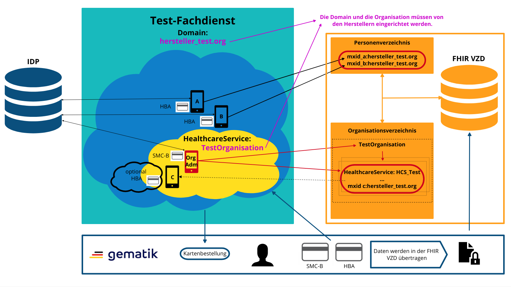
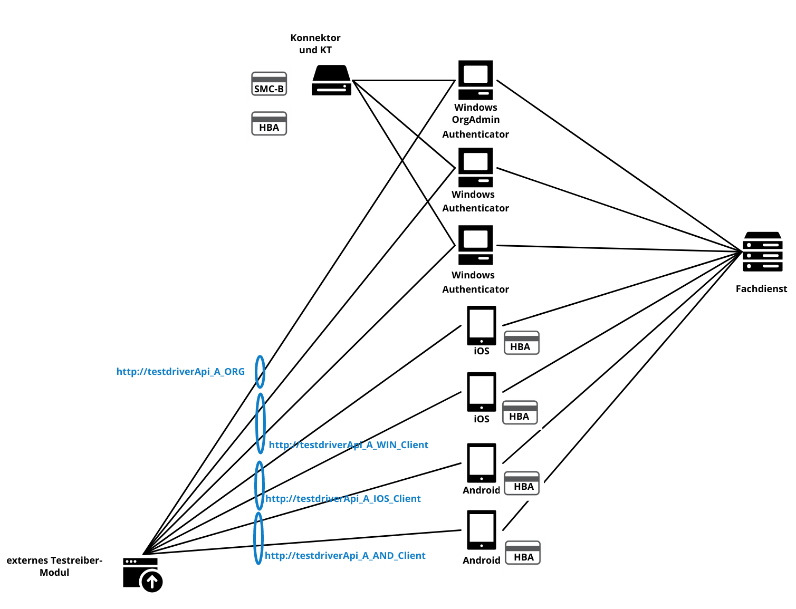
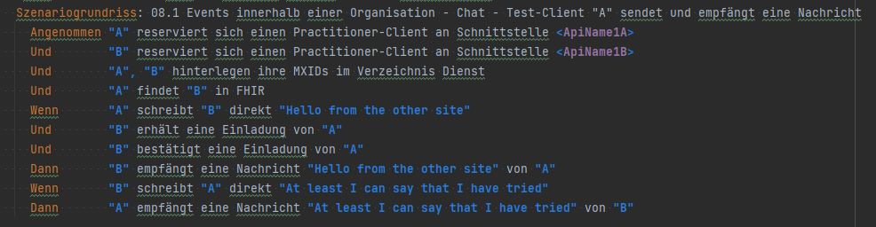
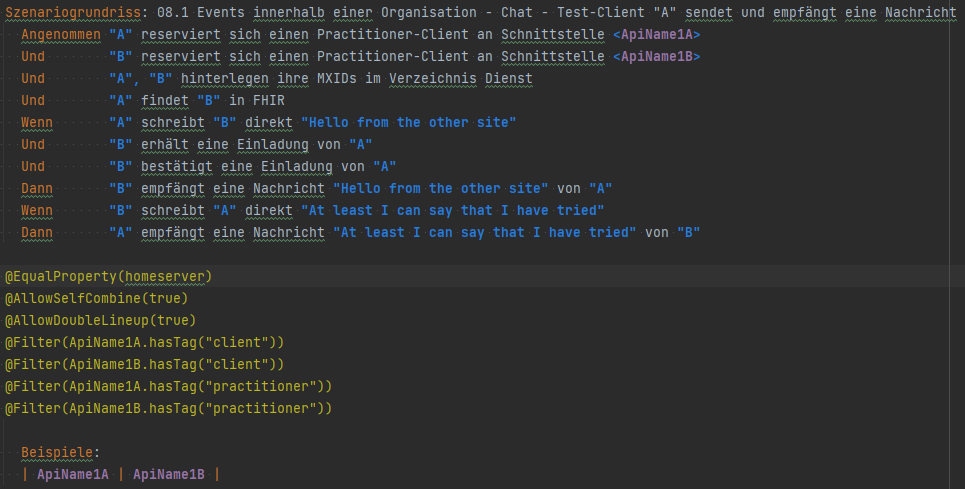
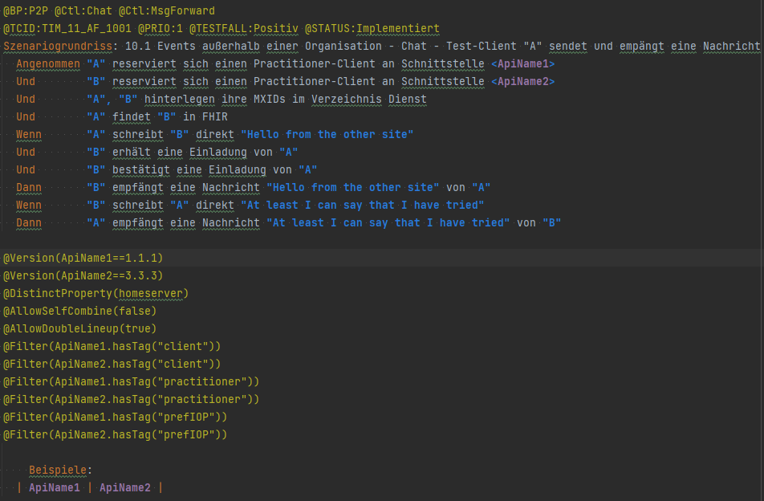
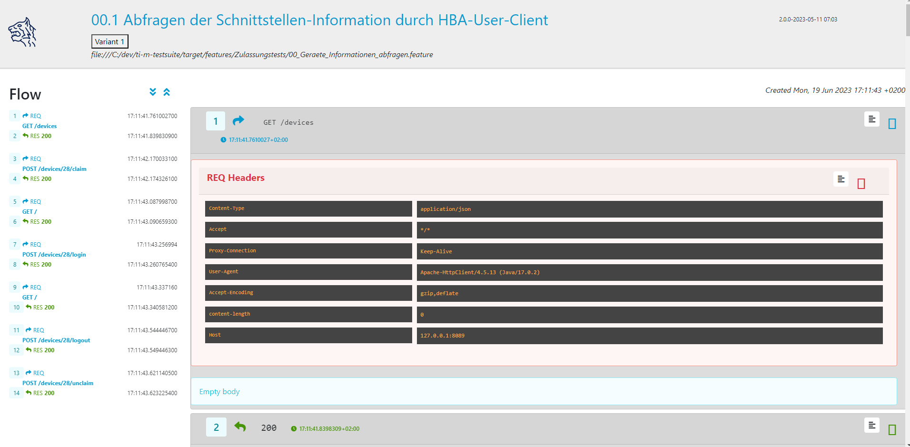

TI-Messenger-Dienst Testsuite
1. Einführung
In den folgenden Kapiteln sind alle nötigen Informationen zu den bereitgestellten Testfällen und der Funktionalität der Testsuite beschrieben.
Alle wichtigen Informationen für die Hersteller sind wie folgt gekennzeichnet.
|
🚩
|
Wichtige Informationen für die Hersteller |
1.1 TI-Messenger-Dienst Systemübersicht
Bei der Umsetzung der Funktionalitäten des TI-Messenger-Dienstes sind mehrere Komponenten beteiligt, die durch verschiedene Anbieter bereitgestellt werden. Die folgende Abbildung zeigt alle an der TI-Messenger-Architektur beteiligten Komponenten mit deren Schnittstellen.

1.2 TI-Messenger-Dienst Anwendungsfälle
Für jeden zu testenden Anwendungsfall wurde ein Feature File angelegt. In diesem Feature File befinden sich dann die einzelnen Tests für den jeweiligen Anwendungsfall.
Feature File |
AF Nummer |
Beschreibung |
Anmerkung |
AF_10103 |
Authentisieren einer Organisation am TI-Messenger-Dienst |
wird nicht mit der Testsuite getestet 1) |
|
AF_10060 |
Bereitstellung eines Messenger-Service für eine Organisation |
wird nicht mit der Testsuite getestet 1) |
|
03 |
AF_10059 |
Organisationsressourcen im Verzeichnisdienst hinzufügen |
|
04 |
AF_10057 |
Anmeldung eines Akteurs am Messenger-Service |
|
05 |
AF_10058 |
Akteur (User-HBA) im Verzeichnisdienst hinzufügen |
|
AF_10064 |
Föderationszugehörigkeit eines Messenger-Service prüfen |
wird im AF_10104 und AF_10061 mit getestet 2) |
|
07 |
AF_10104 |
Einladung von Akteuren innerhalb eines Messenger-Service |
|
08 |
AF_10063 |
Austausch von Events innerhalb eines Messenger-Service |
|
09 |
AF_10061 |
Einladung von Akteuren anderer Messenger-Services |
|
10 |
AF_10062 |
Austausch von Events zwischen anderen Messenger-Services |
|
11 |
AF_10061 |
Einladung von Akteuren via Freigabeliste |
1) Die Schnittstelle am Registrierungs-Dienst wird nicht durch die gematik normativ vorgegeben. Sie bietet einem Akteur in der Rolle "Org-Admin" einer Organisation die Möglichkeit, Messenger-Services für seine Organisation zu administrieren. Bei dieser Schnittstelle bleibt es dem TI-Messenger-Anbieter überlassen diese in geeigneter Form bereitzustellen. Die gematik gibt lediglich grundlegende bereitzustellende Funktionen vor und führt auch keine Tests an dieser Schnittstelle durch.
2) Für diesen Anwendungsfall wurden kein eigenes Feature File angelegt.
Info: Teile der Anwendungsfälle AF_10104 & AF_10061 (Einladung) werden implizit in den Anwendungsfällen AF_10063 & AF_10062 (Eventaustausch) mitgetestet, da diese Preconditions für den Eventaustausch darstellen und somit nicht doppelt getestet werden.
1.3 Zusätzliche Anwendungsfälle
Neben den Anwendungsfällen, die in der Spezifikation beschrieben sind, wurden noch zwei weitere Anwendungsfälle für die Tests definiert. In diesen Anwendungsfällen werden Gruppenchats und die Nutzung von mehreren Geräten getestet. Die Anfrage der Geräte-Information aller Schnittstellen hat nur informativen Charakter.
Feature File |
AF Nummer |
Beschreibung |
Anmerkung |
00 |
ohne |
Abfragen der Geräte-Information aller Schnittstellen |
informativ |
12 |
ohne |
Gruppen Chats |
|
13 |
ohne |
Nutzung von mehreren Geräten |
2. Akteure des TI-Messenger-Dienst
Es wird zwischen zwei Gruppen von Akteuren unterschieden, die verschiedene Funktionen/Aktionen ausführen können. In Kapitel 3 werden diese differenzierter beschrieben.
Die Zuordnung der Anwendungsfälle zu den einzelnen Gruppen von Akteuren sehen wie folgt aus:

3. Akteure in der TI-Messenger-Testsuite
3.1 HBA - User
Die Rolle "User-HBA" kann ausschließlich von einem Leistungserbringer eingenommen werden. Die Authentifizierung des Akteurs erfolgt hierbei über seinen HBA. Ein Akteur in der Rolle "User-HBA" kann seine MXID im Personenverzeichnis im VZD-FHIR-Directory hinterlegen, damit andere Akteure in der Rolle "User-HBA", die ebenfalls die eigene MXID auf dem VZD-FHIR-Directory hinterlegt haben, ihn kontaktieren können.
|
🚩
|
Für Akteure Practitioner müssen HBAs von den Herstellern bestellt werden Anforderungen an die Clients. |
3.2 Organisations User
Die Rolle "User" kann von einem Leistungserbringer sowie von einem Mitarbeiter im Gesundheitswesen
eingenommen werden. Die Authentifizierung des Akteurs erfolgt hierbei nicht über eine SMC-B oder
einen HBA, sondern über ein vom Messenger-Service bereitgestelltes Authentifizierungsverfahren.
Für einen Akteur in der Rolle "User" kann dessen MXID im Organisationsverzeichnis auf dem
VZD-FHIR-Directory durch den Org-Admin hinterlegt werden, um für Akteure außerhalb seiner Organisation
auffindbar zu werden.
Die Oragnisations User können auch gleichzeitig HBA-User sein. Das bedeutet die Organisation trägt die MXID
der HBA-User in den Endpoint eines Healthcare Services im Organisationsverzeichnis auf dem VZD-FHIR-Directory ein.
|
🚩
|
Für die Einrichtung von Organisations User werden eine Domain und eine Organisation benötigt Messenger-Service für eine Organisation. |
3.3 Org-Admin
Die Rolle "Org-Admin" stellt eine besondere Rolle im TI-Messenger Kontext dar. Leistungserbringer oder Mitarbeiter einer Organisation können diese Rolle einnehmen, nachdem sie ihre Organisation zuvor erfolgreich am Registrierungs-Dienst unter Verwendung ihrer SMC-B authentifiziert haben. Nach der erfolgreichen Authentifizierung wird ein Admin-Account am Registrierungs-Dienst vom TI-Messenger-Fachdienst angelegt. Mit der Anmeldung am Registrierungs-Dienst über den Admin-Account nimmt ein Akteur die Rolle "Org-Admin" ein. Dieser kann Messenger-Services für seine Organisation registrieren und Einträge im Organisationsverzeichnis des VZD-FHIR-Directory verwalten.
|
🚩
|
Für die Akteure Org-Admins müssen SMC-Bs von den Herstellern bestellt werden Anforderungen an die Clients. |
4. Bereitstellungen der Hersteller
Um die Testsuite ausführen zu können sind bestimmte Bereitstellungen durch die Hersteller erforderlich. Folgende
Absätze beschreiben die benötigten Bereitstellungen der Hersteller.
4.1 Messenger-Service für eine Organisation
|
🚩
|
Testkarten (HBA/SMC-B) müssen von den Herstellern bestellt werden siehe Anforderungen an die Clients. |
|
🚩
|
Für die Ausführung der Testsuite werden eine Domain und eine Organisation benötigt. Diese Domain und Organisation müssen von den Herstellern vor Beginn der Testphase eingerichtet werden und die Daten an die gematik übermittelt werden. |
|
🚩
|
Die verwendeten Akteure/User müssen von den Herstellern auf dem Homeserver eingerichtet werden. |

4.2 Test Clients mit Testtreiberschnittstelle
Das folgende Bild zeigt die Inbetriebnahme der Testtreiberschnittstelle und der Clients. Die Clients können über eine
externe oder interne Testtreiberschnittstelle mit der Testsuite remote oder local verbunden werden. Diese Leistung muss von
jedem Hersteller erbracht werden. Welche Clients eingesetzt werden, können die Hersteller selbstständig entscheiden.
Es werden nur bereitgestellte Clients zugelassen.
Clients mit den gleichen Eigenschaften werden unter einer URL zusammengefasst. Diese URL wird dann in die Konfigurationsdatei
'combine_items.json' eingetragen. In dieser Datei werden alle Testobjekte verwaltet.

4.3 Anforderungen an die Clients
Die Testsuite benötigt für die Ausführung der Tests eine bestimmte Anzahl von Clients. Besonders die Tests für den Gruppen
Chat benötigen diverse Endgeräte.
|
🚩
|
Grundsätzlich müssen an jeder Schnittstelle mindestens drei Geräte zur Verfügung stehen (z.B. 3 x IOS Clients, 3 x Android Clients, 3 x Windows Clients usw.). Ausgenommen von dieser Festlegung ist der Org-Admin, hier ist ein Gerät ausreichend. |
|
🚩
|
Die Clients benötigen Testidentitäten (SMC-B/HBA Karten). Die Kartenbestellung erfolgt über das gematik Fachportal: https://fachportal.gematik.de/gematik-onlineshop/testkarten?ai%5Baction%5D=detail&ai%5Bcontroller%5D=Catalog&ai%5Bd_name%5D=Testkarte-eGK-G2&ai%5Bd_pos%5D=1 |
|
🚩
|
Welche Testkarten müssen bestellt werden: 1. "TestKarte SMC-B G2.1 Krankenhaus" oder "TestKarte SMC-B G2.1 Arztpraxis" (1x für OrgAdmin Schnittstelle) 2. "TestKarte HBA G2.1 Arzt" (3x pro Schnittstelle) |
|
🚩
|
Wenn mehrere Hersteller oder Personen eines Herstellers eine Testressource gleichzeitig nutzen wollen, muss die Anzahl der Clients dementsprechend erhöht werden, da eine Testsuite pro Run die oben genannte Anzahl an Devices benötigt |
4.4 Verwaltung der Ressourcen
Hinter jeder Schnittstelle des Testtreiber Moduls verbergen sich ggf. mehrere Devices (siehe 4.3) mit der gleichen Grundkonfiguration. Diese Grundkonfiguration betrifft:
-
Client Version (Version vom TI-M)
-
Betriebssystem (Os)
-
Typ (Org-Admin oder Messenger-Client)
Pro Device muss neben allen anderen Daten genau 1 User inkl Passwort hinterlegt werden (1:1 Beziehung).
Dies gilt für Messenger-Clients ebenso wie für Org-Admin Clients.
Wenn hinter dem Messenger-Client Device eine HBA liegt, um HBA Interaktionen z.B. mit dem VZD durchzuführen, müssen der User des Devices und der Name auf der HBA übereinstimmen. Somit kann sich dann der eingeloggte und hinterlegte User auch als HBA authentifizieren.
Der hinterlegte User muss auf dem Homeserver bzw. der TI-M Instanz registriert sein, so dass eine Anmeldung im TI-M über die Testtreiber Schnittstelle mittels POST Login möglich wird.
Der Start eines Testfalls sieht dann wie folgt aus:
-
Get Info - Abfragen der Info Schnittstelle, an der alle wichtigen Informationen des Devices hinterlegt sind
-
Get Device - Liste aller Device einer Schnittstelle werden abgefragt
-
Claim Device - Ein Device im Status ‘unclaimed’ wird für den Testlauf geclaimt
-
Post Login - Leerer Request Post Login mit der Device ID und der Response:
|
🚩
|
Wie der Testtreiber Schnittstellen Dokumentation zu entnehmen ist, wird ausschließlich ‚BasicAuth‘ genutzt. |
|
🚩
|
Grundsätzlich liegt hinter jedem Device exakt ein User inkl. Passwort. |
|
🚩
|
Wenn es sich um einen Practitioner-Client Device handelt, muss der User mit dem auf der hinterlegten HBA übereinstimmen |
|
🚩
|
Die Verwaltung der Domain, der Organisationen und der User liegt in der Verantwortung der Hersteller. |
|
🚩
|
Weiterhin müssen die Hersteller die Schnittstellen für die TI-Messenger-Testsuite aktuell halten. |
5. Referenzimplementierung
Die gematik stellt eine TI-Messenger-Dienst Referenzimplementierung zur Verfügung. Zur Sicherstellung der Interoperabilität zwischen verschiedenen TI-Messenger-Fachdiensten innerhalb des TI-Messenger-Dienstes muss der TI-Messenger-Dienst (TI-Messenger-Client und TI-Messenger-Fachdienst) eines TI-Messenger-Anbieters gegen die Referenzimplementierung (TI-Messenger-Client und TI-Messenger-Fachdienst) getestet werden.
6. Tags und Filter
6.1 Tags zur Steuerung der Testsuite
Tags für die Berechtigungsprüfung:
Tag Name |
Beschreibung |
@BP: |
Tests mit Berechtigungsprüfung Es gibt weiterhin Tags für die erfolgreiche und für die nicht erfolgreiche Berechtigungsprüfung. |
Tags die zur Steuerung der Testsuite verwendet werden:
Tag Name |
Beschreibung |
@Ctl:Additional |
zusätzliche Tests, die kein direktes Akzeptanz-Kriterium bzw. keinen Anwendungsfall haben |
@Ctl:AdditionalIOP |
zusätzliche Tests, die mehrere HomeServer benötigen und für IOP Tests genutzt werden |
@Ctl:UseCase |
Tests die UseCases aus der Spezifikation abbilden |
@Ctl:OneHomeServer |
Tests die mit nur einem Homeserver ausgeführt werden können |
@Ctl:SchnittstellenInfo |
Tests die Schnittstellen Informationen abfragen |
@Ctl:OrgAdmin |
OrgAdmin Tests |
@Ctl:Chat |
Tests die einen Chat benutzen |
@Ctl:SearchPart |
Tests mit teilqualifizierter Suche |
@Ctl:Raum |
Tests die einen Raum benutzen |
@Ctl:InvitReject |
Tests mit abgelehnter Einladung |
@Ctl:RejectThird |
Tests Einladung von Dritten wir abgelehnt |
@Ctl:MsgForward |
Tests senden Nachrichten von A nach B |
@Ctl:MsgBackward |
Tests senden Nachrichten von B nach A |
@Ctl:MsgDelete |
Tests mit gelöschten Nachrichten |
@Ctl:MsgLogout |
Tests mit Offline-Geräten |
@Ctl:Attachment |
Tests mit Attachments |
@Ctl:Forbidden |
Berechtigungsprüfung lehnt Verbindung ab |
@Ctl:Freigabeliste |
Tests mit der Freigabeliste |
@Ctl:Gruppenchat |
Gruppenchat |
@Ctl:GruppenchatGroß |
Gruppenchat mit mindestens 5 HomeServern |
@Ctl:GruppenchatPool |
Gruppenchat mit 3 HomeServern |
@Ctl:MultiDevices |
ein User verwendet mehrere Geräte |
@Ctl:NOVZD |
Tests die den VZD nicht benötigen |
Zusätzlichen Tag zur Unterscheidung der Feature-Files:
Tag Name |
Beschreibung |
@File: |
Filename |
Tags für Polarion (Test-Management-Tool):
Tag Name |
Beschreibung |
@AF-ID: |
Verweis auf den Anwendungsfall (Spec und Polarion) |
@AK-ID: |
Verweis auf das Akzeptanz-Kriterium (Spec und Polarion) |
@PRIO: |
Testfall Priorität |
@PRODUKT: |
Verknüpft das Szenario oder das Feature zu einem Produkt |
@STATUS: |
Testfall Status |
@TCID: |
Testfall ID |
@TESTFALL: |
Positiv/Negativ Test |
Plugin Tags:
Tag Name |
Beschreibung |
@Plugin: |
Steuerung des cucumber-test-combinations Plugin. Dieser Tag ist ausschließlich im Report zu sehen, da unter ihm die Filter für das Plugin gesammelt dargestellt werden (siehe Kapitel 9) |
Cucumber Tag:
Tag Name |
Beschreibung |
@WIP |
Work in Progress |
6.2 Combine Items, Tags und Properties für die Plugin Konfiguration
Der BDD-Parameterizer (auch Kombinations-Plugin genannt) wird dazu genutzt die Testdaten-Kombinationen, in diesem Fall die APIs, zu steuern. Somit wird gewährleistet, dass genau das richtige Set an Daten für den jeweiligen Fokus des Testfalls erzeugt wird und dann in Iterationen ausgeführt werden kann.
Die combine_items.json
Grundlage hierfür ist das kartesische Produkt aller möglichen Kombinationen der in der generierten Target combine_items.json (target/generated-combine/combine_items.json) enthaltenen Schnittstellen. Mit Hilfe von Filtern, die direkt im .cute-File (später feature-File) gesetzt werden, kann nun diese Liste verkleinert und fokussiert werden.
Die combine_items.json im Target Folder (target/generated-combine/combine_items.json) wird aus der Source combine_items.json (src/test/resources/combine_items.json) und den aus der Testtreiber Schnittstelle zum Device ausgelesenen Daten (definiert in der pom.xml) erzeugt.
-
Source combine_items.json - Bereitstellen der Schnittstelle (url). Evtl. zusätzliche Tags und Properties.
-
pom.xml - Tags und Properties, die über die Testtreiber-Schnittstelle vom Device als Info-Daten (im Folgenden als "Info-Daten" bezeichnet) ausgelesen werden und für alle Schnittstellen gelten.
-
Target combine_items.json - Das Produkt aus Source combine_items.json und ausgelesenen Info-Daten (pom.xml). Dies dient als Grundlage für die Kombinatorik.
Beispiel einer Source combine_items.json:
In der Source combine_items.json (src/test/resources/combine_items.json) enthalten sind:
-
(Pflicht) „value“: Frei wählbarer Text (muss die URL zur Testtreiber Schnittstelle des jeweiligen Devices enthalten, wenn die Variable „url“ nicht befüllt wird)
-
(Optional) „url“: URL zur Testtreiber Schnittstelle des jeweiligen Devices
-
(Optional) „groups“: Groups können gesetzt werden, um ein Item einer oder mehrerer Gruppen zuzuordnen. Sie helfen bei der Auswahl der zu verwendenden Schnittstellen und sind wichtig für das Pooling (siehe Kapitel 6.5).
🚩Obwohl optional, sollte der Gruppenname für alle Geräte angegeben werden, wenn ein Pooling-Test gewünscht wird. -
(Optional) „tags“: Tags, die nicht durch das Auslesen der Info-Daten gefüllt werden. Oder auch Tags, die durch das Auslesen der Info-Daten gefüllt werden und mit dem Wert in der combine_items.json verglichen werden sollen
-
(Optional) „properties“: Properties, die nicht durch das Auslesen der Info-Daten gefüllt werden. Oder auch Properties, die durch das Auslesen der Info-Daten gefüllt werden und mit den Werten in der combine_items.json verglichen werden sollen
Vergleichsoptionen Tags
Hintergrund der Vergleichsoptionen von Tags und Properties ist, dass so z.B. schon vor dem Erstellen der Testdaten geprüft werden kann, dass die hinterlegten Devices an der genannten Schnittstelle den Anforderungen entsprechen, die notwendig sind.
Tags, die in der Source combine_itmes.json angegeben sind und ebenfalls aus einem Device ausgelesen werden sollen (definiert in der pom.xml), können miteinander verglichen werden. Dies geschieht case sensitive (1:1 Beziehung). Sollte sich der Tag in der combine_items.json und von dem in der pom.xml definierten unterscheiden, wird der Tag aus der Source combine_items.json als zusätzlicher Tag gewertet und in die Target combine_items.json übernommen.
Beispiel:
Source combine_items.json |
Definition in der pom.xml |
Daten aus der TesttreiberSchnittstelle |
Aktion |
Ergebnis in der Target combine_items.json |
client |
client |
true |
Vergleich |
Ein Eintrag (client) |
client |
nichts |
(nichts in der pom.xml definiert) |
Übernahme |
Ein Eintrag (client) |
Client |
client |
true |
Übernahme |
Zwei Einträge (client, Client) |
nichts |
client |
true |
Übernahme |
Ein Eintrag (client) |
client |
client |
false |
Vergleich |
Abbruch - Error |
nicht |
client |
false |
Übernahme |
Abbruch - Error |
Vergleichsoptionen Properties
Geben wir z.B. die Property ‚os‘ (wie im obrigen Beispiel) mit einem entsprechenden Wert mit, so wird geprüft, ob das Device hinter der URL des Testtreibers tatsächlich dieses ‚os‘ hinterlegt hat, wenn diese Property ebenfalls in der pom.xml definiert ist. Die Überprüfung erfolgt hier case sensitive (iOS – iOS; usw).
Source combine_items.json |
Daten aus der TesttreiberSchnittstelle |
Ergebnis Vergleich |
iOS |
Windows, Linux, Android, … |
Abbruch - Error |
iOS |
iOS |
OK |
iOS |
IOS, ios |
Abbruch - Error |
iOS |
null |
Abbruch - Error |
Die potenitell möglichen Enum Werte sind in der Testtreiber Schnittstellenbeschreibung zu finden:
Erzeugung von Tags und Properties über die Testtreiberschnittstelle
Die Daten, die von dem jeweiligen Device ausgelesen werden und die combine_items.json im Target Folder (target/generated-combine/combine_items.json) anreichern, werden in der pom.xml unter ‚cucumber-test-combinations-maven-plugin‘ definiert. Dies können Tags oder auch Properties sein.
Beispiel für die Erzeugung von Tags:
Tags werden erzeugt, wenn der eingegebene JSON-Path im "expression"-Teil 'true' zurückliefert.
Beispiel für die Erzeugung von Properties:
Tags und Properties werden erzeugt durch die auf der Schnittstelle hinterlegten Daten, die über die Testtreiberschnittstelle vor jedem Testrun an der Info Schnittstelle ausgelesen werden.
Auch für Properties sind in dem "expression"-Teil JSON-Paths anzugeben. Diese werden dann mit dem entsprechenden Wert befüllt und nicht wie bei Tags auf 'true' geprüft.
Die Target combine_items.json und die Kombinatorik
Nach der Generierung der Target combine_items.json sieht die Schnittstelle (oben aus dem Beispiel) inkl. aller definierten und verglichenen Daten dann wie folgt aus:

|
🚩
|
In der Target combine_items.json (target/generated-combine/combine_items.json) sind dann alle Schnittstellen zu den Testtreibern der einzelnen Devices inkl aller notwendigen Daten hinterlegt. Mit Hilfe dieser Daten können dann die Testdaten für die Feature Files erzeugt und die einzelnen Tests ausgeführt werden. |
Diese Tags und Properties dienen der direkten Steuerung der Testdaten, die zu einem bestimmten Testfall passen. In unserem Beispiel haben wir einen:
-
Client
-
Welcher neu (new) zu testen ist (dieser Tag wird in Kapitel 6.3 noch genauer erläutert)
-
Dieser Client ist Preferred IOP (prefIOP) → Wird also in den IOP Tests bevorzugt genutzt
-
Hinter diesem Client liegt eine HBA, somit sind auch ‚Practitioner‘ Handlungen z.B. im VZD möglich
-
Bei diesem Client handelt es sich um einen 'client', mit dem man Nachrichten versenden kann
Außerdem:
-
Der Client gehört zur company „Referenzimplementierung - gematik GmbH“
-
Wir befinden uns auf dem Homeserver „A“
-
Sein OS ist „IOS“
-
Die Versionen von Client und Testtreiber API
-
Der Client gehört zu der Gruppe "Referenzimplementierung"
Anhand dieser Werte, die auch jederzeit erweiterbar sind, können wir nun mit Filtern die Testdaten erzeugen, die exakt zu dem Vorhaben des Testfalls passen.
Ein Beispiel:
Gehen wir an dieser Stelle einfach davon aus, dass wir 3 verschiedene Clients (iOS, Android, Windows) mit je einer HBA und einen Org-Admin Client für Anbieter A vorliegen haben für diesen Testfall:

Eine Chat-Kommunikation von 2 User mit einer HBA soll innerhalb einer Organisation über die Schittstellen <ApiName1A> und <ApiName1B> stattfinden.
Um nun das kartesische Produkt aller möglichen Kombinationen anzupassen, sagen wir nun:
-
Alle Devices müssen auf dem gleichen Homeserver sein
-
Sie sollen sich auch selbst kombinieren dürfen (z.B. IOS mit IOS, Android mit Android)
-
Sie dürfen auch vice versa vorkommen (z.B. IOS-Android, Android-IOS)
-
ApiName1A soll ein Client sein (kein OrgAdmin)
-
ApiName1B soll ein Client sein (kein OrgAdmin)
-
ApiName1A soll eine HBA hinterliegen, um Practitioner Handlungen durchzuühren
-
ApiName1B soll eine HBA hinterliegen, um Practitioner Handlungen durchzuühren
Um dies zu erreichen werden nun folgende Filter mit Blick auf die Target combine_items.json angewandt:
Der fertige Testfall sieht dann wie folgt aus:

Nach dem Run des Plug-Ins ist das Resultat zum Ausführen des Testfalls dann folgendes (hier zu finden: target/features/Zulassungstests/Testrun):
Wie wir nun sehen, wurde z.B. unser OrgAdmin Client ausgefiltert und eben die Kombinationen erzeugt, die wir brauchen bzw. oben beschrieben haben.
Sichtbar ist in der Tabelle die Variable „Value“ aus der Target combine_items.json (target/generated-combine/combine_items.json), die einerseits frei wählbar ist oder die URL zur Testtreiber Schnittstelle enthält (siehe oben: Definition/Möglichkeiten in der Source combine_items.json).
Dieses Verfahren dient der klaren Visualisierung, welche Devices in einem Test genutzt werden, da URLs nicht immer Aufschluss darüber geben, welches Device exakt damit verbunden ist.
Es gibt weitere Filtermöglichkeiten, die auch in der TestSuite zum Einsatz kommen und in der Dokumentation zu finden sind:
Wie genau die Reihenfolge der Filterung funktioniert ist ebenfalls der Dokumentation zu entnehmen.
Vergleichsoptionen der Schnittstellen Response
Es besteht auch weiter die Möglichkeit vor Erstellung der Target combine_items.json und dem Lauf der Kombinatorik Vergleichswerte für die einzelnen Items zu definieren. Hierzu wird die Response json jeder Schnittstelle validiert.
So kann bespielsweise eine Minimalanzahl von Devices hinter einer Schnittstelle geprüft werden. Dies ist auch als Defaultwert in der pom.xml hinterlegt:
Hier ist beispielsweise definiert, dass alle Schitstellen mit dem Wert 'orgAdmin' mindestens ein Device und alle anderen 3 Devices hinterlegt haben müssen (wie in Kaptiel 4.3 beschrieben), sonst wird der Run nicht weiter fortgesetzt.
Es können auch dedizierte Vergleichswerte definiert werden, die dann einzelnen Schnitstellen in der combine_items.json zugeordnet werden können. Dies kann auch global in der pom.xml geschehen, so dass dann an die Schnitstellt in der combine_items.json lediglich die ID weiter gegeben werden muss.
Weitere Information zu den Möglichkeiten sind unter Plugin/doc/userguide zu finden.
6.3 Special Tags [ ‚new‘ tag,'newonly' Profil und 'Practitioner' & 'perfIOP' Tag]
‚new‘ Tag & ‚newonly‘ Profil
Wenn der Tag ‚new‘ in einer Schnittstelle in der Source combine-items.json (src/test/resources/combine_items.json) gesetzt wurde (und damit auch in der Target combine_items.json enthalten ist) und das newonly Profil dazu gewählt wird, werden nach dem Durchlauf der Filter nur diejenigen Kombinationen genutzt, in denen eben der ‚new‘ Tag vorhanden ist.
Zum Beispiel von zuvor:
Unsere Beispiel Schnittstelle (iOS)
hat den Tag ‚new‘. Alle anderen haben diesen nicht (Android und Win). Wenn wir nun das newonly Profil auswählen und die Kombinationen erzeugen, bekommen wir folgendes Ergebniss:

Wir sehen nun, dass nur Kombinationen erzeugt wurden, in denen unsere ‚new‘ Schnittstelle vorkommt. Hintergrund hierfür ist, dass so bestimmte Schnittstellen dediziert bzw. auch im IOP getestet werden können, wenn der Fokus nur diese Schnittstellen inkl. aller dazugehörigen Kombinationen ist.
|
🚩
|
Der ‚new‘ Tag wird nicht automatisch erzeugt, sondern muss nach Bedarf manuell vergeben bzw. entfernt werden in der Source combine_items.json (src/test/resources/combine_items.json). |
Der 'practitioner' Tag
Der ‚practitioner Tag‘ ist derzeit (kann auch erweitert werden) eines von drei Tags, die über die Testtreiberschnittstelle am Info Endpunkt vom jeweiligen Device abgefragt werden. Diese drei Tags sind in der pom.xml definiert (Erklärung zur pom.xml weiter oben in Kapitel 6.2) und sind folgende:
-
client – Es handelt sich um einen User Client, der Nachrichten versenden darf
-
orgAdmin – Es handelt sich um einen OrgAdmin Client, der auf das Organisationsverzeichnis im VZD zugreifen darf
-
practitioner – Hinter diesem Device ist eine HBA hinterlegt, so dass der User auch auf das Personenverzeichnis im VZD zugreifen darf
Folgen wir nun unserem vorigen Beispiel und schauen auf die Tags, die einerseits vergeben und andererseits vom Device selbst ausgelesen wurden:
Wir haben es an dieser Schnittstelle also mit einem User Client („client“) zu tun, der auch eine HBA hinterlegt hat („practitioner“), um z.B. Einträge im Personenverzeichnis des VDZ zu tätigen.
Somit ergeben sich als Verwendung dieses Devices nun zwei Möglichkeiten, die dann über die Filterung der Testdaten exakt zum Testfall passend erzeugt werden können:
-
Wir können dieses Device als HBA-User nutzen mit allen Handlungsmöglichkeiten, für die eine HBA Authentifizierung notwendig ist
-
Wir können dieses Device aber auch als Organisation-User nutzen, indem wir im Testfall z.B. keine Aktionen im Personenverzeichnis im VZD durchführen, also die HBA nicht nutzen.
Das 'prefIOP' Tag
Dieser Client ist als Preferred IOP (prefIOP) gekennzeichnet → Wird also in den IOP Tests bevorzugt genutzt. Dieser Tag kann frei vergeben und in der Filterung der Testdaten genutzt werden.
|
🚩
|
Zur Nutzung des Tags 'prefIOP' muss immer ein Device gewählt werden, hinter dem eine HBA liegt. So ist sichergestellt, dass sowohl Tests im HBA Kontext und ohne diesen Kontext ausgeführt werden! |
6.4 Versionsfilter
Versionsfilter
Das Feature ‚Versionsfilter‘ kann genutzt werden, um die Test Suite gegen eine vorher definierte Version des TI-Messengers laufen zu lassen. Weiter kann dieses Feature auch für einzelne Testfälle oder auch einzelne Parameter-Columns innerhalb eines Testfalls genutzt werden. Somit entsteht die Möglichkeit auch Versionen gegeneinander zu testen, was hier nun im Weiteren erläutert wird.
Als Versionen werden in diesem Filter die Client Versionen betrachtet, die an den Testtreiberschnittstellen hinterlegt sind und für die combine_items ausgelesen werden.
Ein Beispiel:
Welcher Wert hier für das Feature Versionsfilter genutzt wird, wird in der pom.xml konfiguriert:
|
🚩
|
Wichtig: Default ist die VersionProperties mit >version< befüllt und muss ggf. angepasst werden passend zu den tatsächlich ausgelesenen und in der pom.xml definierten Daten. |
|
🚩
|
Der Versionsparameter muss in Form von X , X.X , X.X.X or X.X.X.X etc. vorhanden sein, wobei X ein Integer sein muss! |
Um einen Versionsfilter global zu setzen, muss der entsprechende Wert in die pom.xml eingetragen werden. Per default ist dieser nicht befüllt.
Wird hier nun ein Wert eingetragen, werden nur die Schnittstellen der combine_items für die Kombinatorik genutzt, die diesem Wert entsprechen. Ergo werden alle Schnittstellen die diesem Wert nicht entsprechen, an dem folgenden Testrun nicht teilnehmen.
Wichtig an dieser Stelle ist zu erwähnen, dass vor der Version ein Standard ‚two-way comparison operator‘ gesetzt werden muss. Dies kann im mathematischen oder im bash Style erfolgen.

Weitere Informationen hierzu sind hier zu finden:
Man kann den Versionsfilter auch über die Kommandozeile ausführen. Ein Beispiel hierfür ist:
mvn clean verify -Dcucumber.filter.version=--EQ-- 3.3.3
|
🚩
|
Wichtig an dieser Stelle ist: Wenn in der pom.xml ein Versionsfilter und in der Kommandozeile ebenfalls ein Versionsfilter angegeben wird, so übersteuert der Wert in der Kommandozeile den globalen Wert in der pom.xml! |
Auf Testfallebene kann dieser Filter ebenfalls genutzt werden. Hierzu können Versionsfilter für die Parameter genutzt werden, die dann im Nachgang die Kombinatorik bestimmen.
Ein Beispiel:

In diesem Testfall werden nun zwei Schnittstellen genutzt. Es besteht nun die Möglichkeit jeder Schnittstelle einen Versionswert zuzuordnen. In unserem Bespiel würden wir nun für die Kombinatorik lediglich Schnittstellen mit der Client Version 1.1.1 gegen die Client Version 3.3.3 herangezogen, um die auszuführenden Targetfiles zu generieren.
Wollen wir nun einen separaten Testfall gänzlich gegen eine Version testen, können die Filter kombiniert werden.
Beispiel:
So würde in der Kombinatorik und anschließenden Ausführung für beide Parameter des Testfalls lediglich Schnittstellen der Version 3.3.3 berücksichtigt.
Zwangsläufig müssen nicht alle Parameter mit einem Versionsfilter befüllt werden. Wir können in diesem Beispiel auch nur dem Parameter „ApiName1“ einen Versionsfilter geben. Für „ApiName2“ wird dann entweder der global gesetzte Filter in der pom.xml genutzt oder sollte dieser nicht befüllt sein, eben alle anderen Schnittstellen, da hier keine Beschränkung vorliegt.
|
🚩
|
Wichtig: Versionsfilter auf Testfallebene übersteuern gesetzte Filter in der pom.xml und auch in der Kommandozeile!!! |
Die Hirarchie ist also wie folgt:
Versionsfilter auf Testfallebene > Versionsfilter in der Kommandozeile > Versionsfilter in der pom.xml
Weitere Informationen sind, wie zuvor erwähnt, an folgender Stelle zu finden:
6.5 Pooling
Pooling
Das Pooling Feature dient dazu, dass mehrere spezifizierte Gruppen von Schnittstellen gegeneinander getestet werden können. So besteht die Möglichkeit, dass z.B. mehrere Hersteller Teilnehmer eines IOP Tests sein können, ohne wirklich alle Schnitstellen gegeneinander zu testen.
|
🚩
|
Ein Pool besteht aus mehreren Gruppen! |
Um dieses Feature zu nutzen, muss in einem ersten Schritt allen Items in der Source combine_items.json, die genutzt werden sollen, eine Gruppe zugeordnet werden.
|
🚩
|
Nachdem die Kombinationen durch das PlugIn erzeugt wurden, wird ein LogFile in ./target/generated-combine/usedGroups.json erzeugt. Daraus wird dann ersichtlich welche Gruppen an dem Testrun teilgenommen haben und welche nicht. |
In der pom.xml können u.a. Pools definiert werden.
Ein Beispiel:
So kann an dieser Stelle folgendes definiert werden:
-
groupPattern: Diese beschreiben welcher namentliche Wert einer Gruppe im Pool enthalten sein soll
-
amount: Dieser Wert beschreib die Anzahl der Gruppen, die im Pool vorkommen dürfen
-
strategy: Dieser Wert beschreibt die 'Matching' Strategie der groupPattern. In diesem Fall z.B. kann mit Wildcards gearbeitet werden
Weitere Informationen zu diesen Werten und vor allem den Möglichkeiten der 'Matching' Strategien ist hier zu entnehmen: Plugin/doc/userguide
Die grundlegende Konfiguration des Poolings findet ebenfalls in der pom.xml statt
Ein Beispiel:
Neben den zuvor beschriebenen Pools können so nun folgende Werte bestimmt werden:
-
defaultMatchStrategy: Hier wird der Default Wert für die 'Matching' Strategie definiert
-
poolSize: Hier kann eine fixe Pool-Größe definiert werden
-
excludedGroups: Mit diesem Wert können Gruppen definiert werden, die NICHT im Pool berücksichtigt werden sollen.
-
poolGroupString: Auf diesen Wert wird im Anschluss noch genauer eingegangen. An dieser Stelle kann dieser Wert auch fix gesetzt werden.
|
🚩
|
Wichtig: All diese Werte können auch flexibel genutzt werden, indem sie mit Parametern befüllt werden. |
Zur Ausführung eines Pools kann die Kommandozeile genutzt werden.
Zum Beispiel kann hier nun, wenn die Werte in der pom.xml als Parameter definiert sind, die größe des Pools und exkludierte Gruppen definiert werden:
-DpoolSize=3 -DexcludedGroups='\*special'
Des Weiteren ist es mittels poolGroupString möglich ganze Pools bzw deren Inhalt zu definieren:
-DpoolGroupString='*approved|BBB*|CCC*,3,WILDCARD;*open,,REGEX'
An erster Stelle kann nun über die Pattern bestimmt werden, welche namentlichen Gruppen im Pool inkludiert sein sollen. Mehrere Pattern werden mit einer '|' getrennt. Dieser Wert muss mindestens einmal befüllt sein. Die beiden folgenden Werte können auch leer gelassen werden. Dann greifen die Default-Werte (amount=0 und default Matching Strategie aus der pom.xml)
Der zweite Wert definiert die Anzahl der Gruppen, die mit den zuvor genannten Pattern am Pool teilnehmen sollen.
Der dritte Wert definiert die 'Matching' Strategie.
Nach einem ';' können noch weitere Definitionen getroffen werden, z.B. für andere 'Matching' Strategien.
|
🚩
|
Wichtig: Sollte in der Kommandozeile oder in der Konfiguration poolGroupString genutzt werden, überschreibt diese andere in der pom.xml definierten Werte und Pools. |
Wenn als Anzahl 0 oder nicht mitgegeben wird, werden alle passenden Gruppen genutzt.
Wenn jedoch die Anzahl der Gruppen größer ist als die Größe des Pools, werden random Gruppen gewählt, bis die Größe des Pools erreicht ist.
Ist die Anzahl der definierten Gruppen kleiner als die Größe des Pools, wird dieser random mit weiteren Gruppen befüllt, bis die Anzahl der Gruppen und die Pool-Größe zueinander passen.
Ein solches Beispiel wäre:
-DpoolSize=6 -DpoolGroupString='*approved|BBB*|CCC*,3,WILDCARD'
Wir wollen eine Poolsize von 6, haben aber in den Pattern des poolGroupString nur drei Gruppen definiert. Jetzt werden weitere drei Gruppen random hinzugefügt, um auf die Poolgröße 6 zu kommen.
Weitere und tiefere Informationen sind unter Plugin/doc/userguide zu finden.
7. Berechtigungsprüfung
7.1 Berechtigungskonzept
Berechtigungskonzept - Stufe 1
In der 1. Stufe MUSS geprüft werden, ob die in der Anfrage enthaltenen Matrix-Domains zugehörig zur TI-Föderation sind. Ist dies der Fall, MUSS die Anfrage an den Matrix-Homeserver des Einladenden weitergeleitet werden. Ist dies nicht der Fall, MUSS die beabsichtigte Anfrage des Akteurs vom Messenger-Proxy des Einladenden abgelehnt werden. Nach der Weiterleitung an den Matrix-Homeserver prüft dieser, ob der eingeladene Akteur der gleichen Organisation angehört. Stellt der Matrix-Homeserver fest, das der eingeladene Akteur nicht zu seiner Domain gehört wird das Invite-Event an den Messenger-Proxy des einzuladenden Akteurs weitergeleitet. Dieser prüft erneut die Zugehörigkeit zur TI-Föderation (Stufe 1). Bei erfolgreicher Prüfung erfolgt dann die Weiterverarbeitung gemäß der Stufe 2.
Berechtigungskonzept - Stufe 2
In dieser Stufe prüft der Messenger-Proxy des Einzuladenden auf eine vorliegende Freigabe. Hierbei handelt es sich um eine Lookup-Table, in der alle erlaubten Akteure hinterlegt sind, von denen man eine Einladung in einen Chatraum akzeptiert. Ist ein Eintrag vom einladenden Akteur vorhanden, dann MUSS die beabsichtigte Einladung des Akteurs zugelassen werden. Ist dies nicht der Fall, MUSS die weitere Überprüfung gemäß der 3. Stufe erfolgen.
Berechtigungskonzept - Stufe 3
In der letzten Stufe erfolgt die Prüfung ausgehend von den Einträgen der beteiligten Akteure im VZD-FHIR-Directory. Die Einladung MUSS zugelassen werden, wenn:
-
die MXID des einzuladenden Akteurs im Organisationsverzeichnis hinterlegt und seine Sichtbarkeit in diesem Verzeichnis nicht eingeschränkt ist oder
-
der einladende sowie der einzuladende Akteur im Personenverzeichnis hinterlegt sind und der einzuladende Akteur seine Sichtbarkeit in diesem Verzeichnis nicht eingeschränkt hat
Ist die Prüfung nicht erfolgreich, dann MUSS die beabsichtigte Einladung des Akteurs vom Messenger-Proxy abgelehnt werden.
7.2 Tags für die erfolgreichen Berechtigungsprüfungen
Teilnehmer "A" kann alle Teilnehmer "B" einladen wenn diese einen Eintrag für "A" in der Freigabeliste erstellt hat.
Berechtigungsprüfung Stufe 2
Teilnehmer A |
Teilnehmer B |
Ergebnis |
Tag |
alle |
alle mit Freigabe für A |
ok |
@BP:FL |
Teilnehmer "A" lädt Teilnehmer "B" (ohne Freigabelisteneintrag) ein.
Berechtigungsprüfung Stufe 3a
Teilnehmer A |
Teilnehmer B |
Ergebnis |
Tag |
Personenverzeichnis |
Organisationsverzeichnis |
ok |
@BP:P2O |
Organisationsverzeichnis |
Organisationsverzeichnis |
ok |
@BP:O2O |
ohne Eintrag |
Organisationsverzeichnis |
ok |
@BP:N2O |
Berechtigungsprüfung Stufe 3b
Teilnehmer A |
Teilnehmer B |
Ergebnis |
Tag |
Personenverzeichnis |
Personenverzeichnis |
ok |
@BP:P2P |
Homeserver intern (beide Teilnehmer befinden sich auf demselben Homeserver)
Teilnehmer A |
Teilnehmer B |
Ergebnis |
Tag |
Personenverzeichnis |
ohne Eintrag |
ok |
@BP:P2N_intern |
Organisationsverzeichnis |
Personenverzeichnis |
ok |
@BP:O2P_intern |
Organisationsverzeichnis |
ohne Eintrag |
ok |
@BP:O2N_intern |
ohne Eintrag |
Personenverzeichnis |
ok |
@BP:N2P_intern |
7.3 Tags für die nicht erfolgreichen Berechtigungsprüfungen
Teilnehmer "A" lädt Teilnehmer "B" aus einer anderen Organisation (ohne Freigabelisteneintrag) ein.
Berechtigungsprüfung nicht erfolgreich
Teilnehmer A |
Teilnehmer B |
Ergebnis |
Tag |
Personenverzeichnis |
ohne Eintrag |
abgelehnt |
@BP_P2N_extern |
Organisationsverzeichnis |
Personenverzeichnis |
abgelehnt |
@BP_O2P_extern |
Organisationsverzeichnis |
ohne Eintrag |
abgelehnt |
@BP_O2N_extern |
ohne Eintrag |
Personenverzeichnis |
abgelehnt |
@BP_N2P_extern |
8. Testfall Liste
00.1 |
Abfragen der Schnittstellen-Information durch HBA-User-Client |
00.2 |
Abfragen der Schnittstellen-Information durch Organisations-User-Client |
00.3 |
Abfragen der Schnittstellen-Information durch Org-Admin-Client |
00.4 |
Abfragen der Geräte-Liste durch HBA-User-Client |
00.5 |
Abfragen der Geräte-Liste durch Organisations-User-Client |
00.6 |
Abfragen der Geräte-Liste durch Org-Admin-Client |
03.1 |
Organisationsressourcen im Verzeichnisdienst hinzufügen - Healthcare-Service durch Org-Admin anlegen |
03.2 |
Organisationsressourcen im Verzeichnisdienst hinzufügen - Healthcare-Service durch Org-Admin anlegen und Endpoint ändern |
03.3 |
Organisationsressourcen im Verzeichnisdienst hinzufügen - Healthcare-Service durch Org-Admin anlegen/ändern, Endpoint anlegen/ändern und löschen |
03.4 |
Organisationsressourcen im Verzeichnisdienst hinzufügen - Healthcare-Service durch Org-Admin mit zwei Endpoints anlegen und löschen |
03.5 |
Organisationsressourcen im Verzeichnisdienst hinzufügen - Nicht validen Healthcare-Service durch Org-Admin anlegen |
04.1 |
Anmeldung eines Akteurs - Erfolgreiche Anmeldung eines Akteurs (HBA) |
04.2 |
Anmeldung eines Akteurs - Erfolgreiche Anmeldung eines Akteurs (OrgUser) |
04.3 |
Anmeldung eines Akteurs - Erfolgreiche Anmeldung eines Akteurs (OrgAdmin) |
05.1 |
Akteur im Verzeichnisdienst - Hinzufügen - HBA-User legt sich an und sucht seinen Eintrag |
05.2 |
Akteur im Verzeichnisdienst - Hinzufügen - HBA-User legt sich an und sucht anderen Eintrag |
05.3 |
Akteur im Verzeichnisdienst - Hinzufügen - HBA-User aus anderer Organisation sucht HBA-User Eintrag |
05.4 |
Akteur im Verzeichnisdienst - Löschen - HBA-User löscht Eintrag |
05.5 |
Akteur im Verzeichnisdienst - Löschen - HBA-User löscht Eintrag und ist nicht auffindbar für HBA-User anderer Organisation |
05.6 |
Akteur im Verzeichnisdienst - Hinzufügen - Nicht erfolgreich ohne Authentication im Verzeichnisdienst |
07.1 |
Einladung innerhalb einer Organisation - Einladung in Chat - Teilqualifizierte Suche (HBA-User an HBA-User) |
07.2 |
Einladung innerhalb einer Organisation - Einladung in Raum - Teilqualifizierte Suche (HBA-User an HBA-User) |
07.3 |
Einladung innerhalb einer Organisation - Einladung in Chat - Ablehnung der Einladung (HBA-User an HBA-User) |
07.4 |
Einladung innerhalb einer Organisation - Einladung in Raum - Ablehnung der Einladung (HBA-User an HBA-User) |
07.5 |
Einladung innerhalb einer Organisation - Einladung in Chat - Ablehnung der Einladung (Organisations-User an Organisations-User) |
07.6 |
Einladung innerhalb einer Organisation - Einladung in Raum - Ablehnung der Einladung (Organisations-User an Organisations-User) |
07.7 |
Einladung innerhalb einer Organisation - Einladung in Chat - Dritter Nutzer soll in Chat eingeladen werden (HBA) |
07.8 |
Einladung innerhalb einer Organisation - Einladung in Chat - Dritter Nutzer soll in Chat eingeladen werden (OrgUser) |
07.9 |
Einladung innerhalb einer Organisation - Im Verzeichnisdienst nicht registrierter Nutzer wird gesucht durch HBA-User |
07.10 |
Einladung innerhalb einer Organisation - Im Verzeichnisdienst nicht registrierter Nutzer wird gesucht durch Organisations-User |
07.11 |
Einladung innerhalb einer Organisation - Im Verzeichnisdienst nicht registrierter Nutzer wird angeschrieben durch HBA-User |
07.12 |
Einladung innerhalb einer Organisation - Im Verzeichnisdienst nicht registrierter Nutzer wird angeschrieben durch Organisations-User |
07.13 |
Einladung innerhalb einer Organisation - Einladung in Chat - HBA-User ohne Eintrag im Verzeichnisdienst versucht HBA-User einzuladen |
07.14 |
Einladung innerhalb einer Organisation - Einladung in Raum - HBA-User ohne Eintrag im Verzeichnisdienst versucht HBA-User einzuladen |
07.15 |
Einladung innerhalb einer Organisation - Einladung in Chat - Organisations-User ohne Eintrag im Verzeichnisdienst versucht Organisations-User einzuladen |
07.16 |
Einladung innerhalb einer Organisation - Einladung in Raum - Organisations-User ohne Eintrag im Verzeichnisdienst versucht Organisations-User einzuladen |
07.17 |
Einladung innerhalb einer Organisation - Einladung in Chat - Teilqualifizierte Suche auf dem Homeserver |
07.18 |
Einladung innerhalb einer Organisation - Einladung in Raum - Teilqualifizierte Suche auf dem Homeserver |
08.1 |
Events innerhalb einer Organisation - Chat - Test-Client "A" sendet und empfängt eine Nachricht |
08.2 |
Events innerhalb einer Organisation - Raum - Test-Client "A" sendet eine Nachricht |
08.3 |
Events innerhalb einer Organisation - Raum - Test-Client "B" sendet eine Nachricht |
08.4 |
Events innerhalb einer Organisation - Chat - HBA-User sendet Organisations-User eine Nachricht |
08.5 |
Events innerhalb einer Organisation - Raum - HBA-User sendet Organisations-User eine Nachricht |
08.6 |
Events innerhalb einer Organisation - Chat - Organisations-User sendet Organisations-User eine Nachricht |
08.7 |
Events innerhalb einer Organisation - Raum - Organisations-User sendet Organisations-User eine Nachricht |
08.8 |
Events innerhalb einer Organisation - Chat - Organisations-User sendet HBA-User eine Nachricht |
08.9 |
Events innerhalb einer Organisation - Raum - Organisations-User sendet HBA-User eine Nachricht |
08.10 |
Events innerhalb einer Organisation - Chat - HBA-User "B" löscht eine Nachricht |
08.11 |
Events innerhalb einer Organisation - Chat - Organisations-User "B" löscht eine Nachricht |
08.12 |
Events innerhalb einer Organisation - Raum - HBA-User "A" löscht eine Nachricht |
08.13 |
Events innerhalb einer Organisation - Raum - Organisations-User "A" löscht eine Nachricht |
08.14 |
Events innerhalb einer Organisation - Raum - HBA-User "A" sendet eine Nachricht an ausgeloggten Test-Client "B" |
08.15 |
Events innerhalb einer Organisation - Raum - Organisations-User "A" sendet eine Nachricht an ausgeloggten Test-Client "B" |
08.16 |
Events innerhalb einer Organisation - Raum - HBA-User "A" sendet ein Attachment |
08.17 |
Events innerhalb einer Organisation - Raum - Organisations-User "A" sendet ein Attachment |
08.18 |
Events innerhalb einer Organisation - Raum - HBA-User "B" sendet ein Attachment |
08.19 |
Events innerhalb einer Organisation - Raum - Organisations-User "B" sendet ein Attachment |
08.20 |
Events innerhalb einer Organisation - Chat - Eventaustausch auf dem HomeServer |
08.21 |
Events innerhalb einer Organisation - Raum - Eventaustausch auf dem HomeServer |
09.1 |
Einladung außerhalb einer Organisation - Einladung in Chat - Teilqualifizierte Suche (HBA-User an HBA-User) |
09.2 |
Einladung außerhalb einer Organisation - Einladung in Raum - Teilqualifizierte Suche (HBA-User an HBA-User) |
09.3 |
Einladung außerhalb einer Organisation - Einladung in Chat - Organisations-User lädt HBA-User ein |
09.4 |
Einladung außerhalb einer Organisation - Einladung in Chat - Ablehnung der Einladung (HBA-User an HBA-User) |
09.5 |
Einladung außerhalb einer Organisation - Einladung in Raum - Ablehnung der Einladung (HBA-User an HBA-User) |
09.6 |
Einladung außerhalb einer Organisation - Einladung in Chat - Ablehnung der Einladung (Organisations-User an Organisations-User) |
09.7 |
Einladung außerhalb einer Organisation - Einladung in Raum - Ablehnung der Einladung (Organisations-User an Organisations-User) |
09.8 |
Einladung außerhalb einer Organisation - Einladung in Chat - Dritter Nutzer soll in Chat eingeladen werden (HBA) |
09.9 |
Einladung außerhalb einer Organisation - Einladung in Chat - Dritter Nutzer soll in Chat eingeladen werden (OrgUser) |
09.10 |
Einladung außerhalb einer Organisation - Im Verzeichnisdienst nicht registrierter Nutzer wird gesucht durch HBA-User |
09.11 |
Einladung außerhalb einer Organisation - Im Verzeichnisdienst nicht registrierter Nutzer wird gesucht durch Organisations-User |
09.12 |
Einladung außerhalb einer Organisation - Im Verzeichnisdienst nicht registrierter Nutzer wird angeschrieben durch HBA-User |
09.13 |
Einladung außerhalb einer Organisation - Im Verzeichnisdienst nicht registrierter Nutzer wird angeschrieben durch Organisations-User |
09.14 |
Einladung außerhalb einer Organisation - Einladung in Chat - HBA-User ohne Eintrag im Verzeichnisdienst versucht HBA-User einzuladen |
09.15 |
Einladung außerhalb einer Organisation - Einladung in Raum - HBA-User ohne Eintrag im Verzeichnisdienst versucht Organisations-User einzuladen |
09.16 |
Einladung außerhalb einer Organisation - Einladung in Chat - Organisations-User ohne Eintrag im Verzeichnisdienst versucht HBA-User einzuladen |
09.17 |
Einladung außerhalb einer Organisation - Einladung in Raum - Organisations-User ohne Eintrag im Verzeichnisdienst versucht Organisations-User einzuladen |
09.18 |
Einladung außerhalb einer Organisation - Negativ Suche - Qualifizierte Suche auf dem Homeserver |
10.1 |
Events außerhalb einer Organisation - Chat - Test-Client "A" sendet und empfängt eine Nachricht |
10.2 |
Events außerhalb einer Organisation - Raum - Test-Client "A" sendet eine Nachricht |
10.3 |
Events außerhalb einer Organisation - Raum - Test-Client "B" sendet eine Nachricht |
10.4 |
Events außerhalb einer Organisation - Chat - HBA-User sendet Organisations-User eine Nachricht |
10.5 |
Events außerhalb einer Organisation - Raum - HBA-User sendet Organisations-User eine Nachricht |
10.6 |
Events außerhalb einer Organisation - Chat - Organisations-User sendet Organisations-User eine Nachricht |
10.7 |
Events außerhalb einer Organisation - Raum - Organisations-User sendet Organisations-User eine Nachricht |
10.8 |
Events außerhalb einer Organisation - Chat - Organisations-User sendet HBA-User eine Nachricht |
10.9 |
Events außerhalb einer Organisation - Raum - Organisations-User sendet HBA-User eine Nachricht |
10.10 |
Events außerhalb einer Organisation - Chat - HBA-User "B" löscht eine Nachricht |
10.11 |
Events außerhalb einer Organisation - Chat - Organisations-User "B" löscht eine Nachricht |
10.12 |
Events außerhalb einer Organisation - Raum - HBA-User "A" löscht eine Nachricht |
10.13 |
Events außerhalb einer Organisation - Raum - Organisations-User "A" löscht eine Nachricht |
10.14 |
Events außerhalb einer Organisation - Raum - HBA-User "A" sendet eine Nachricht an ausgeloggten "B" |
10.15 |
Events außerhalb einer Organisation - Raum - Organisations-User "A" sendet eine Nachricht an ausgeloggten "B" |
10.16 |
Events außerhalb einer Organisation - Raum - HBA-User "B" sendet ein Attachment |
10.17 |
Events außerhalb einer Organisation - Raum - Organisations-User "B" sendet ein Attachment |
10.18 |
Events außerhalb einer Organisation - Raum - HBA-User "A" sendet ein Attachment |
10.19 |
Events außerhalb einer Organisation - Raum - Organisations-User "A" sendet ein Attachment |
11.1 |
Einladung via Freigabeliste außerhalb einer Organisation - Raum - Beide User jeweils in Freigabeliste (HBA-User an HBA-User) |
11.2 |
Einladung via Freigabeliste außerhalb einer Organisation - Chat - Beide User jeweils in Freigabeliste (HBA-User an HBA-User) |
11.3 |
Einladung via Freigabeliste außerhalb einer Organisation - Chat - Nur ein User in Freigabeliste (Organisations-User an HBA-User) |
11.4 |
Einladung via Freigabeliste außerhalb einer Organisation - Raum - Nur ein User in Freigabeliste (HBA-User an HBA-User) |
11.5 |
Einladung via Freigabeliste außerhalb einer Organisation - Chat - Nur User in eigener Freigabeliste (HBA-User an HBA-User) |
12.1 |
Events außerhalb einer Organisation - Gruppenchat - Test-Client "A" sendet eine Nachricht (HBA-User) |
12.2 |
Events außerhalb einer Organisation - Gruppenchat - Test-Client "C" sendet eine Nachricht (HBA-User) |
12.3 |
Events außerhalb einer Organisation - Gruppenchat - Test-Client "D" sendet eine Nachricht (Organisations-User) |
12.4 |
Events außerhalb einer Organisation - Gruppenchat - Test-Client "C" sendet eine Nachricht (HBA-User lädt Organisations-User ein) |
12.5 |
Events innerhalb einer Organisation - Gruppenchat - Test-Client "A" sendet eine Nachricht (HBA-User) |
12.6 |
Events innerhalb einer Organisation - Gruppenchat - Test-Client "C" sendet eine Nachricht (HBA-User) |
12.7 |
Events innerhalb einer Organisation - Gruppenchat - Test-Client "B" sendet eine Nachricht (Organisations-User) |
12.8 |
Events innerhalb einer Organisation - Gruppenchat - Test-Client "B" sendet eine Nachricht (HBA-User lädt Organisations-User ein) |
12.9 |
Events innerhalb/außerhalb einer Organisation - Gruppenchat - Test-Client "C" sendet eine Nachricht (Organisations-User) |
12.10 |
Events innerhalb/außerhalb einer Organisation - Gruppenchat - Test-Client "D" sendet eine Nachricht (HBA-User lädt HBA- und Organisations-User ein) |
13.1 |
Events außerhalb einer Organisation - Chat - Test-Client "A" mit 2 Devices |
13.2 |
Events außerhalb einer Organisation - Chat - Test-Client "A" mit 2 Devices |
13.3 |
Events außerhalb einer Organisation - Chat - Test-Client "A" mit 2 Devices - Erhalt vorheriger Nachrichten |
13.4 |
Events außerhalb einer Organisation - Chat - Test-Client "A" mit 2 Devices - Erhalt vorheriger Nachrichten |
13.5 |
Events innerhalb einer Organisation - Chat - Test-Client "A" mit 2 Devices |
13.6 |
Events innerhalb einer Organisation - Chat - Test-Client "A" mit 2 Devices |
13.7 |
Events innerhalb einer Organisation - Chat - Test-Client "A" mit 2 Devices - Erhalt vorheriger Nachrichten |
13.8 |
Events innerhalb einer Organisation - Chat - Test-Client "A" mit 2 Devices - Erhalt vorheriger Nachrichten |
14.1 |
Events außerhalb einer Organisation - Gruppenchat mit 5 Teilnehmern - Test-Client "A" sendet eine Nachricht (HBA-User) |
14.2 |
Events außerhalb einer Organisation - Gruppenchat mit 5 Teilnehmern - Test-Client "E" sendet eine Nachricht (HBA-User) |
14.3 |
Events außerhalb einer Organisation - Gruppenchat mit 5 Teilnehmern - Test-Client "F" sendet eine Nachricht (Organisations-User) |
15.1 |
Events außerhalb einer Organisation - Gruppenchat mit 3 Teilnehmern - Test-Client "A" sendet eine Nachricht (HBA-User) |
15.2 |
Events außerhalb einer Organisation - Gruppenchat mit 3 Teilnehmern - Test-Client "C" sendet eine Nachricht (HBA-User) |
15.3 |
Events außerhalb einer Organisation - Gruppenchat mit 3 Teilnehmern - Test-Client "D" sendet eine Nachricht (Organisations-User) |
15.4 |
Events außerhalb einer Organisation - Gruppenchat mit 3 Teilnehmern - Test-Client "C" sendet eine Nachricht (HBA-User lädt Organisations-User ein) |

9. Testausführung
Die Testsuite wird mit maven gestartet werden:
maven clean verify
Es können auch vordefinierte Profile verwendet werden:
ci-pipeline |
jeder Testfall wird in der Single Mock Umgebung nur einmal ausgeführt |
newonly |
der Testschwerpunkt liegt auf neuen Elementen |
oneonly |
jeder Testfall wird nur einmal ausgeführt |
usetags |
es werden nur bestimmte Tags ausgeführt, default @Ctl:UseCase |
Im Terminal kann dieses Tag und Konfigfiles überschrieben werden:
mvn clean verify -Dcucumber.filter.tags=@FeatureFile_04 -Poneonly,usetags
mvn clean verify -Dcucumber.filter.tags=@TCID:TIM_11_AF_401 -Pusetags
mvn clean verify -Dtiger.config.file=tiger-dev.yml -Pusetags
Im Terminal können Timeout und PollIntervall eingestellt werden
mvn clean verify -Dtimeout=<Timeout in Sekunden> -DpollInterval=<PollIntervall in Sekunden>
Default:
-
Timeout = 10 Sekunden
-
PollInterval = 1 Sekunde
|
Warning
|
Das Timeout muss immer größer als das PollInterval sein! |
Im Terminal kann das Pooling eingestellt werden
mvn clean install -DexcludedGroups='<Pattern>' -DpoolGroupString='<Pattern>,<Amount>,<MatchingStrategy>'
Weitere Infos hierzu sind in Kapitel 6.5 vorhanden.
10. Testreport
Nach Ausführung eines Testruns werden Reports erzeugt. Diese sind in unter 'reports' zu finden und enthalten folgende Informationen:
-
Alle Feature Files, die für diesen Test Run generiert wurden
-
Die combine_items, die für die Kombinatorik genutzt wurde
-
Die used_groups, die in diesem Testrum genutzt wurden
-
Ein Rohdaten report
-
Ein Serenity Test Report
Um den Serenity Report zu öffnen, nutzt man einfach folgendes File als Beispiel:
reports/2023-06-19_17_09_55/report/#index.html
Header
Im Header des Serenity Reports werden alle Gruppen und Testtreiberschnittstellen aufgeführt. So ist schon direkt zu sehen, welche Schnittstellen an diesem Test Run beteilig waren.
Dargestellt werden hier die am Testrun beteiligten Gruppen inkl. der dazu gehörigen Schnittstellen und die Schnittstellen, die Teil des Testruns waren ohne zu einer Gruppe zu gehören.
Summary
In der Summary ist ein Überblick über alle in diesem Testrun gelaufenen Testfälle (Anzahl) inkl. der jeweiligen Ergebnisse und deren Runtime dargestellt.
Unterhlab dieser Darstellung sind alle Tags, die in dem Testrun bzw der Testfälle vorhanden waren, aufgeführt. Diese dienen der Filterung bzw Analyse.

Test Results
Unterhalb des Tabs 'Test Results' des Reports sind alle ausgeführten Testfälle inkl. der dazu gehörigen Testdaten aufgeführt. Diese Auslistung dient der Analyse und zeigt exakt, welche Testreiberschnittstellen welche Aktionen ausführen inkl. deren Response. Dazu ist es notwenig in die Testfälle selbst zu gehen und dann sie entsprechenden Runs zu öffnen:
Im unteren Bereich eines Testfalls ist folgendes zu finden:
Die einzelnen Punkte sind wie folgt zu verstehen:
-
Rohdaten-Statistik-Total: Anzahl der einzelnen Rohdatentypen, die inkl aller zuvor gelaufenen Testfälle bisher mindestens erzeugt werden sollten (aufsummiert)
-
Rohdaten-Statistik: Anzahl der einzelnen Rohdatentypen, die innerhalb dieses Testfalls erzeugt werden sollten.
-
TestcaseId: Die Testcase ID inkl eine UUID (Eindeutigkeit) zur Verifizierung
-
RBelllog: Weitere Logart, die noch detaillierter ist
Der Rbellog ist im Gegensastz zu dem Serenity Report noch etwas detaillierter und für tiefe Analysen vorgesehen. Dieser betrachtet genu den Testfall indem er aufgerufen wird:

11. Plugin Error Log
Sollte es bei der Erzeugung der Kombinationen für die Parameter der Testfälle durch das Plugin zu Fehlern kommen, werden diese in einem entsprechenden Error-Log hinterlegt.
Dieses errorLog.txt ist dann in folgendem Folder zu finden:
target/generated-combine
Mögliche Fehler, die das PlugIn zum Abbruch bringen, können u.a. sein:
-
Tabellen einzelner Testfälle können nicht gebildet werden, z.B. aufgrund fehlender Schnittstellen (oder mit Werten, die nicht zu den Filtern passen)
-
Vorbedinungen (in 6.2 beschrieben), wie z.B. die Anzahl der definierten Devices, sind nicht gegeben
-
Vergleichsoperationen (in 6.2 beschrieben) für Tags geben ein false zurück
-
Bei der Generierung von Pool Tests (in 6.5 beschrieben) sind zu wenige Gruppen oder Schnittstellen vorhanden, um diesen Run zu füllen (z.B. einen Pool Test für 4 Gruppen, nur 3 Gruppen vorhanden und keine weitere Schnittstelle um aufzufüllen)
12. Testfall Beschreibungen
Die Beschreibung der Testfälle befindet sich direkt in den Feature Files. Durch die Verwendung von Gherkin sind die einzelnen Teststeps selbst erklärend.
13. Zusätzliche IOP Feature Files bzw Tests
Folgende Feature Files bzw Testfälle behandelt das Thema IOP in einem größeren Rahmen. Zur Ausführung der Tests bedarf es mehrerer zugelassener Anbieter und somit mehrerer Home Server Instanzen.
Diese Feature Files werden hier abgelegt:
src/test/resources/templates/Zusatztests/Testrun
Feature File |
AF Nummer |
Beschreibung |
Anmerkung |
14 |
ohne |
Gruppenchat |
Gruppenchat mit 5 Teilnehmern/HomeServern |
15 |
ohne |
Gruppenchat |
Gruppenchat mit 3 Teilnehmern/HomeServern |